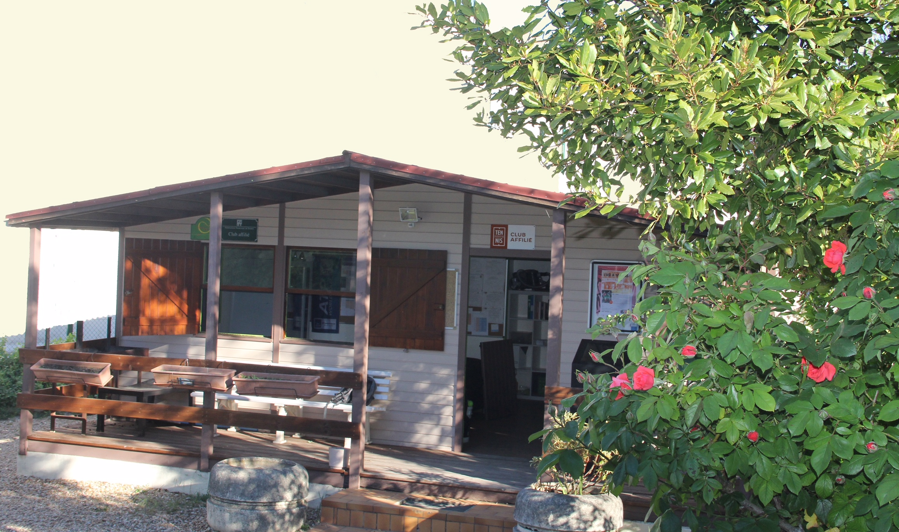

Bienvenue sur le nouveau site du Tennis Club d'Ivry !
Ce nouvel espace vous accompagnera toute l'année et sera régulièrement actualisé avec les informations et les actualités du club.
Club familial et sportif depuis 1978
Un club de quartier vivant, des cours pour tous les âges et le plaisir de se retrouver autour du tennis toute l'année.
Ce nouvel espace vous accompagnera toute l'année et sera régulièrement actualisé avec les informations et les actualités du club.
Un club pour tous les niveaux
Le Tennis Club d'Ivry accompagne les enfants, les adultes loisirs et les joueurs compétition dans une ambiance simple, conviviale et chaleureuse.
Le club en images
Courts extérieurs, bulle couverte et club house : trois espaces qui font vivre le Tennis Club d'Ivry au quotidien.

Le club house, point de rendez-vous des familles, joueurs et bénévoles.

Des terrains ouverts pour les cours, les matchs et le jeu libre.

Des courts couverts pour continuer à jouer pendant la saison froide.
Accès rapide
Les informations et les liens d'inscription seront disponibles prochainement.